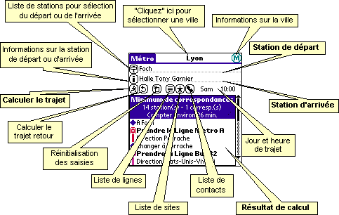
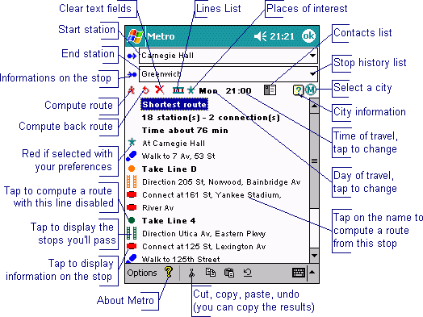

| Métro Guide d'utilisation |
| Métro Guide d'utilisation |
| Guides en une image |
Palm |
||
PocketPC |
||
| Recherche de trajet |
La solution la plus simple :
vous écrivez le nom de la station de départ et de la
station d'arrivée (seuls les premiers
caractères sont nécessaires, le programme
complète le nom si nécessaire) puis vous
"cliquez" sur le bouton (aller). Une
partie du nom de la station suffit (par exemple
"Etoile" pour la station "Charles de
Gaulle-Etoile").
Si vous avez activé l'option dans les préférences
(voir plus bas), le nom de station le plus proche est
automatiquement rempli par le programme au fur et à
mesure de la saisie.
La solution avec assistance : vous "cliquez" sur le bouton (station), la liste de toutes les stations s'affiche. Vous "cliquez" sur celle que vous cherchez, elle s'affiche comme station de départ. Vous "cliquez" sur le champ arrivée et vous cherchez la station d'arrivée dans la même liste. Lorsque vous "cliquez" sur une station elle s'affiche comme station d'arrivée. Pour finir, "cliquez" sur le bouton (aller).
La solution avec assistance intelligente : comme-ci dessus mais avant de "cliquer" sur le bouton , vous entrez les premiers caractères du nom de station. La liste est positionnée sur la station débutant par le texte que vous avez saisi ou la plus proche.
L'assistance permanente : après affichage de la liste (comme dans les deux cas précédents), vous entrez du texte dans les champs Départ ou Arrivée. La liste est positionnée sur la station débutant par le texte que vous avez saisi ou la plus proche.
Le plus rapide : écrivez le début du nom de la station de départ, tracez le signe graffiti de retour à la ligne, écrivez le début du nom de la station d'arrivée et faites encore une fois le signe graffiti de retour à la ligne : le calcul est fait immédiatement !
La cerise sur le gateau : le programme mémorise les dernières stations que vous avez utilisées. Pour rappeler l'une d'elles, "double-cliquez" sur le bouton (station).
D'une seule main sur les appareils Sony et Handera : pressez le JogDial, cherchez votre station dans la liste (avec les boutons haut/bas et changez la sélection avec le JogDial), pressez le JogDial pour sélectionner votre station de départ, répétez l'opération pour la station d'arrivée, pressez une dernière fois le JogDial pour lancer le calcul et faites défiler le résultat avec la molette.
D'une seule main sur les appareils palmOne (Tungsten & Treo 6xx) : pressez le bouton "select" (au centre du navigateur), cherchez votre station dans la liste (avec les boutons haut/bas et changez la sélection avec les boutons droite/gauche), pressez "select" pour sélectionner votre station de départ, répétez l'opération pour la station d'arrivée, pressez une dernière fois "select" pour lancer le calcul et faites défiler le résultat avec le navigateur.
Arrêts multiples : sur PocketPC uniquement (pas sur Palm), vous pouvez indiquer 2 (ou plus) arrêts comme point de départ ou arrivée (utile si vous êtes à égale distance de deux arrêts et ne savez pas lequel vous mènera à destination le plus rapidement). Séparez les noms d'arrêts par des point-virgules : ";". Vous pouvez même spécifier le temps de marche jusqu'à chacun des arrêts : ajoutez un "%" et le temps en minutes derrière le nom d'arrêt (exemple: "République%5;Goncourt%3", qui signifie "je suis à 5 min. de République et 3 min. de Goncourt").
Pour certaines villes, vous pouvez rechercher un site touristique à la place d'une station de métro. Dans la liste des stations, ces sites apparaissent en caractères gras.
Cliquez sur l'icône (info) pour afficher des informations sur la station de départ ou d'arrivée (celle où se trouve le curseur). Sur les sites des bases de données "touriste", vous aurez même des informations détaillées comme l'adresse, le numéro de téléphone, les horaires d'ouverture...
| Retour |
Le bouton (retour) permet simplement de présenter le trajet "à l'envers" (de l'arrivée au départ), sans avoir à entrer à nouveau les noms des stations.
| RAZ |
Le bouton (remise à zéro) réinitialise l'interface de "Métro" : effacement des stations de départ et d'arrivée, de la liste de stations et du résultat de recherche précédent. En option, ce bouton peut également réinitialiser l'heure courante.
| Horaires |
Cette fonction est disponible pour la plupart des réseaux mais pas tous. Avec ces villes, le jour et l'heure du trajet sont affichés à l'écran. Il suffit de "taper" sur ces zones pour sélectionner votre horaire. En option, le bouton (remise à zéro) peut réinitialiser l'heure courante.
Selon l'heure choisie, certaines lignes peuvent ne pas fonctionner ou effectuer un trajet spécifique. "Métro" prend en compte ces particularités.
| Lignes |
Le bouton des lignes présente la liste des lignes de la ville en cours, et permet à son tour d'afficher toutes les stations de la ligne que vous sélectionnez (pour certaines villes, la couleur de fond du titre correspond à la couleur de la ligne). Vous pouvez cliquer sur les stations pour les entrer dans la zone de la station de départ ou d'arrivée (selon la zone où se trouve le curseur). Les stations précédées d'une flèche vers le haut ou vers le bas indiquent les stations desservies dans un seul sens de circulation.
Une ligne n'est en "fonctionnement" (c'est-à-dire utilisée pour calculer un trajet) que si la case à sa gauche est cochée. Si un "X" apparaît, c'est que la ligne est fermée à l'horaire sélectionné. Vous pouvez aussi décocher la case si vous ne voulez pas utiliser la ligne (en cas de grève par exemple).
Pour certaines villes, une icône indique le type (métro, train, tram, bus, funiculaire, trolley ou bateau) et la couleur de la ligne. Dans ce cas, si vous cliquez une deuxième fois sur le bouton , une liste de "groupes" de ligne apparaît qui vous permet d'activer ou désactiver rapidement les lignes : par exemple si vous ne souhaitez pas utiliser le RER à Paris, décochez le "groupe" RER et le programme ne prendra en compte que le métro, le calcul est alors plus rapide.
Sur Palm, l'état d'activation est conservé entre deux utilisations pour les groupes de lignes mais pas pour les lignes individuelles.
| Lieux intéressants |
Pour certaines villes, la base contient les "sites intéressants" : vous pouvez ainsi rechercher un trajet vers (ou depuis) ces sites, comme n'importe quelle station. Pour afficher la liste des lieux enregistrés, "cliquez" sur le bouton (sites) à coté de la liste des lignes. Le bouton est grisé si les sites ne sont pas disponibles pour la ville en cours.
| Adresse |
Vous avez peut-être remarqué l'icône : vous pouvez l'utiliser pour calculer un trajet depuis ou vers un de vos contacts. Quand vous "cliquez" sur ce bouton, une liste s'affiche : elle contient les noms de tous les contacts de votre carnet d'adresses pour lesquels un champ "métro" est renseigné. Lorsque vous sélectionnez un de ces noms, il apparaît dans le champ "Départ" ou "Arrivée", préfixé par un "@".
Vous pouvez également saisir directement un nom de contact, préfixé par un "@", dans le champ "Départ" ou "Arrivée". Vous bénéficiez alors de l'assistance à la saisie (auto-remplissage du nom au fur et à mesure de la saisie), si vous avez activé cette option dans les préférences (voir plus bas).
Pour bénéficier de cette fonction :
Sur Palm, vous devez créer un champ personnalisé nommé "metro" dans votre carnet d'adresses (consultez le manuel de votre appareil pour cette manipulation) et le renseigner pour vos contacts. Vous pouvez indiquer une ou plusieurs stations, séparées par des ";".
Vous pouvez préciser la ville dans laquelle
est situé l'arrêt : préfixez la liste des
arrêts avec le nom de ville ou ses premiers caractères (épelé
exactement comme dans le programme) et ":", le contact
apparaîtra en caractères gras dans la liste si la ville
courante correspond. Exemple : Paris:République;Gare
de l'Est ("Paris"
assure le filtrage aussi bien pour la base de Paris que pour
celle de Paris-bus).
Enfin, vous pouvez également spécifier le
temps de trajet à pied entre l'adresse du contact
et chaque station : ajoutez la valeur en minutes après un '%'
juste derrière le nom de la station. Exemple : République%4;Gare
de l'Est%10 (l'adresse est à 4 minutes de la station
"République" et 10 minutes de
"Gare de l'Est"). Si vous
n'indiquez pas la durée, le programme utilise une valeur de 5
minutes.
Sur PocketPC (sauf version
Windows CE 2.0), ajoutez aux contacts une note de la forme
<METRO>station1;station2</METRO>
où "station1" et "station2" sont
les noms des stations les plus proche de l'adresse de votre
contact. Vous pouvez également indiquer des stations
différentes selon le type d'adresse :<METRO
TYPE="BUSINESS">station1</metro>
pour l'adresse professionelle, <METRO
TYPE="HOME">station2</metro>
pour le domicile et <METRO
TYPE="OTHER">station3</metro>
pour une autre adresse.
Vous pouvez préciser la ville dans laquelle est situé
l'arrêt avec la syntaxe : <METRO
CITY="cityname">station</METRO>
(exemple: <METRO
CITY="Paris">République</METRO>). Dans
ce cas, seuls les contacts pour lesquels un arrêt existe dans la
ville courante sont listés.
Bien entendu, vous pouvez utiliser les deux attributs "TYPE"
et "CITY" simultanément
(exemple: <METRO TYPE="BUSINESS"
CITY="Paris">République</METRO>)
Enfin, vous pouvez également spécifier le
temps de trajet à pied entre l'adresse du contact
et chaque station : ajoutez la valeur en minutes après un '%'
juste derrière le nom de la station. Exemple : <METRO
CITY="Paris">République%4;Gare de
l'Est%10</METRO> (l'adresse est à 4 minutes de
la station "République" et 10
minutes de "Gare de l'Est"). Si
vous n'indiquez pas la durée, le programme utilise une valeur de
5 minutes.
Sur ces appareils vous pouvez redimensionner la liste et la trier à votre convenance. Les noms de stations doivent être saisis exactement tels qu'ils apparaissent dans le programme.
| Résultat |
Lorsque vous "cliquez" sur le bouton (aller), le calcul d'itinéraire est lancé. S'il est long (plus de 2 secondes environ), une barre de progression est affichée. Vous pouvez cliquer dessus pour interrompre le calcul, le meilleur résultat obtenu jusqu'alors est affiché.
Après une recherche, la liste de résultats vous propose une ou deux solutions de trajet : le trajet le plus court (en durée) et celui nécessitant le minimum de correspondances. Si les deux sont identiques, seul le premier est affiché. Quelquefois, les deux trajets ont la même durée et le même nombre de correspondances : vous avez deux solutions différentes mais équivalentes.
Pour certaines villes, la barre qui apparaît à gauche du nom des lignes à prendre reflète leur couleur. Une icône (en face de chaque ligne à prendre) peut aussi indiquer le type de moyen de transport (métro, train, tram, bus, funiculaire, trolley ou bateau).
PalmOS : Cliquez sur le texte des résultats pour copier ceux-ci dans le "presse-papier" : vous pouvez ensuite le coller dans un mémo ou dans un mail.
Cliquez sur les icônes de résultats (colonne de gauche) pour des informations détaillées :
| Informations |
Le bouton (informations) vous permet de consulter les informations disponibles sur la ville sélectionnée ainsi que les personnes qui ont contribué à la création de la base de données. Vous pouvez également y consulter la date de mise à jour de la ville (utile pour vérifier que vous avez la dernière version).
| Options |
Dans le menu "Options", le choix "Préférences" vous propose les options suivantes :
Pour ceux qui ne savent pas accéder au menu sur le Palm, essayez le bouton en bas à gauche de la zone graffiti... Et prenez quelques minutes pour lire la documentation de votre appareil :-)
Cliquez sur (OK) pour valider votre choix ou sur (Annuler) pour abandonner les modifications.
Sur PocketPC, vous pouvez également :
windows/fonts, puis
sélectionnez-la ici !L'option "Réseau" du menu affiche la liste des villes que vous avez installées avec "Métro".
L'option "Réseau" est également accessible par un simple "clic" sur le nom de la ville en cours dans le titre de la fenêtre principale de "Métro".
Les villes suivies d'un petit "" dénotent une version trop ancienne :
vous pouvez les supprimer et vous devez installer une version
plus récente pour l'utiliser. Les villes trouvées sur une carte
d'extension (uniquement dans le répertoire /PALM/Programs/metro)
apparaissent avec une icône spéciale (voir le guide d'installation pour l'utilisation
des extensions).
| Options PocketPC |
Envoyer un commentaire
Cette option crée un nouveau message, dans lequel vous pouvez
vous entrer vos commentaires (ou vos remerciements), et l'envoie
à Frank.
S'abonner à la liste "Métro"
Celle-ci crée un mail qui enregistrera votre adresse sur
notre liste de diffusion, ce qui vous permettra d'être averti à
chaque mise à jour de Métro!
Recevoir un réseau & Envoyer le réseau courant
Ces deux options vous permettent d'échanger les fichiers de
villes de Métro avec d'autres utilisateurs à travers le port IR
(infrarouge) de votre appareil.